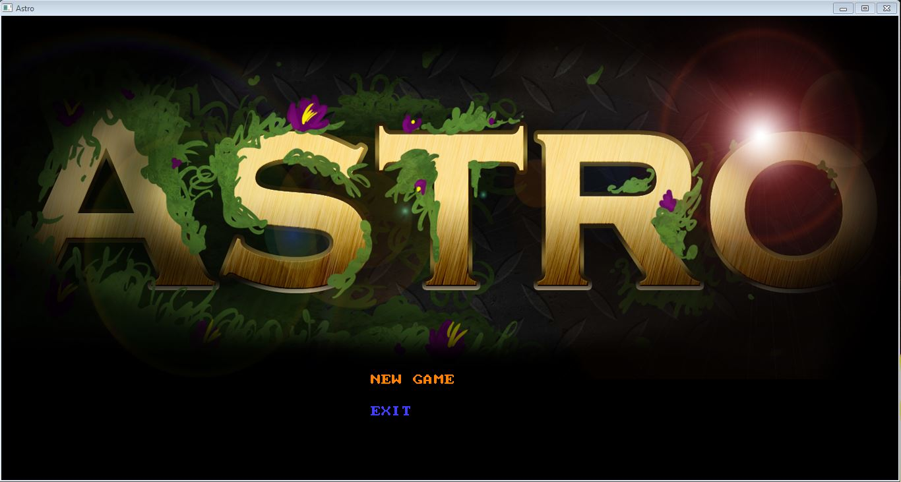
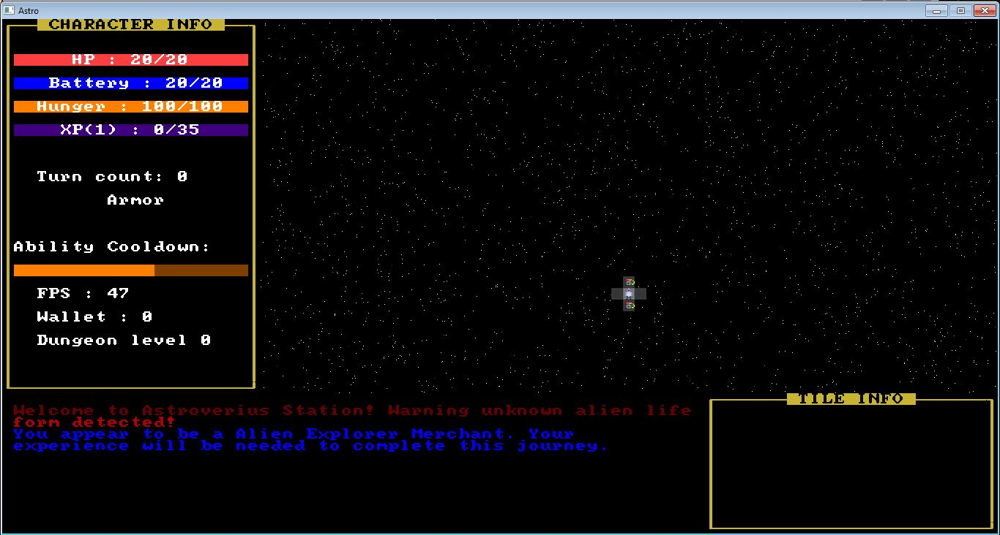
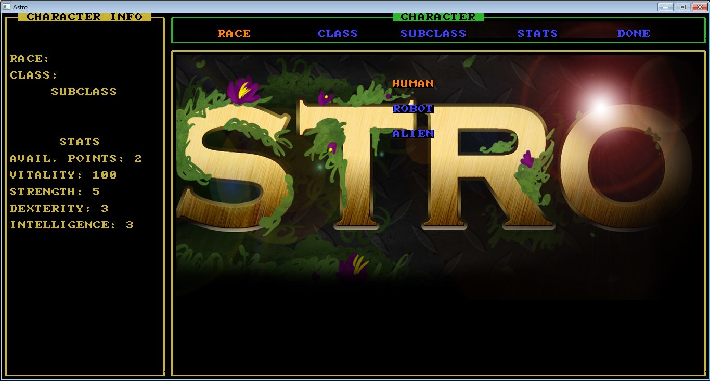
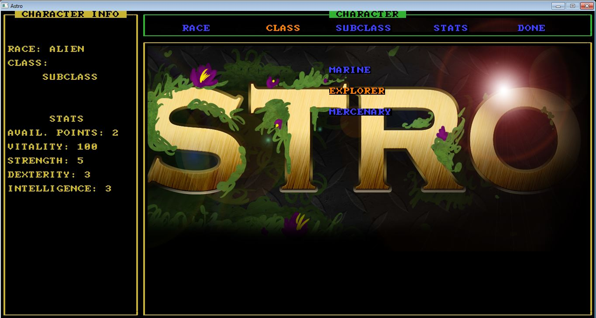

Welcome to Astroverius Station!
 Back to Home
Back to Home
This page contains all the current information for Astro. The images below are to all the current images for the GitHub Wiki and Website.
Back to Home
This page contains all the current information for Astro. The images below are to all the current images for the GitHub Wiki and Website.
Astro Logo
Keyboard Controls

Main Page
Game Start Screen
Character Selection Screen Main

Character Selection Screen Race
Character Selection Screen Class
Character Selection Screen Subclass
.ico image